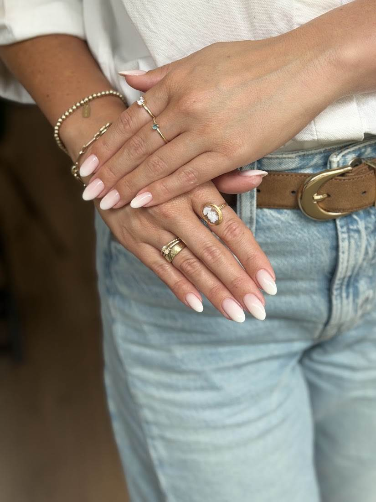
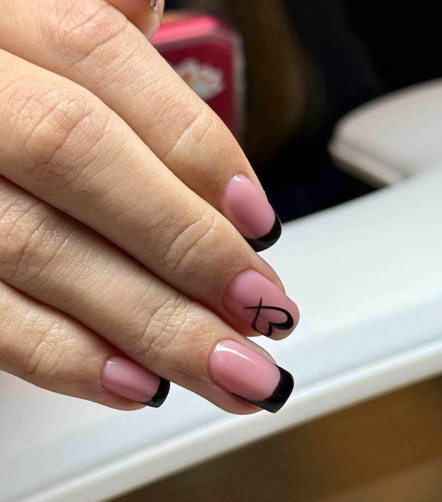
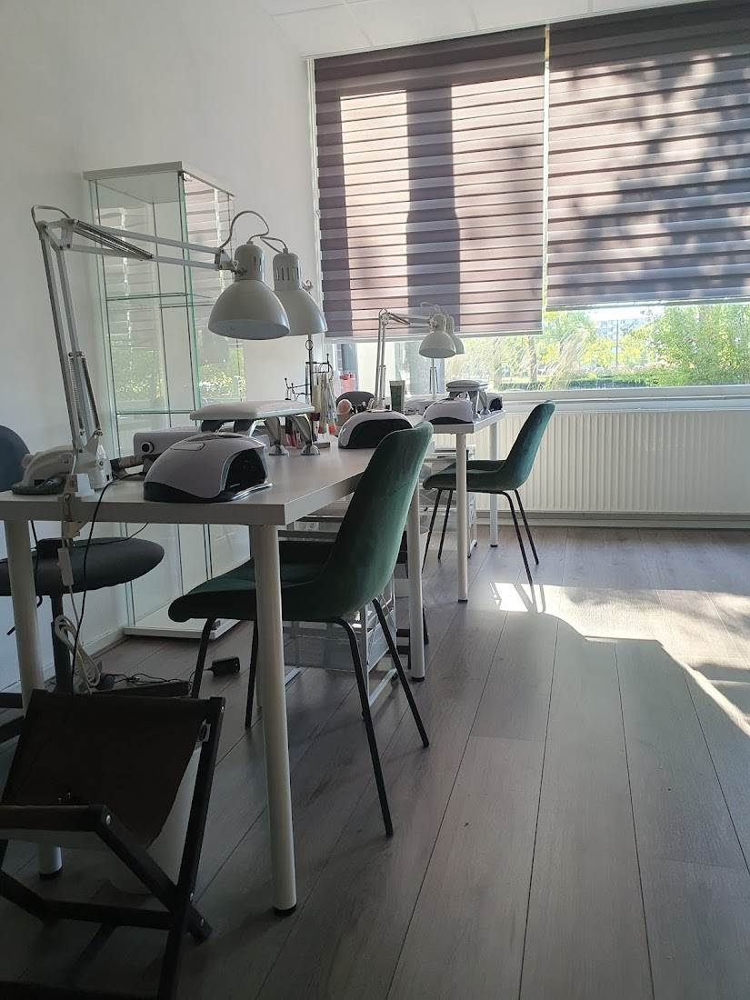
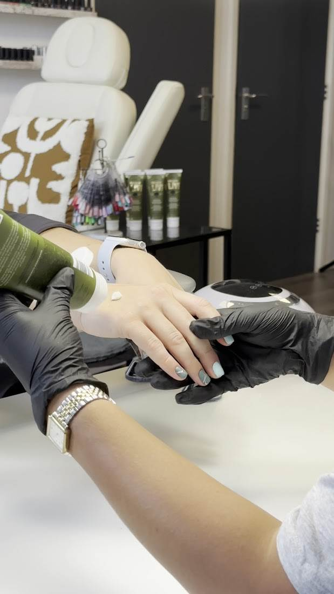

★★★★★
Alle dames die er werken zijn ontzettend lief, enthousiast en getalenteerd. Mijn nagels zijn altijd prachtig verzorgd.
ThatsNienkeNagelstudio aan de Edisonlaan in Apeldoorn. Doordeweeks zijn wij tot acht uur 's avonds open, dus u hoeft er geen vrije middag voor te nemen.



U ziet meteen wat er vrij is, ook de avonduren. Het staat direct genoteerd en u hoeft niemand te bellen.
Een nieuwe set of het bijwerken van de aangroei. U kiest de vorm, de lengte en de kleur.
Nagels en nagelriemen verzorgd, en wij eindigen altijd met een ontspannende handmassage.
French, chrome, een klein hartje of een heel ontwerp. Laat zien wat u mooi vindt, dan maken wij het.

Bij ons werkt een klein team, en dat merkt u. U wordt geholpen door iemand die weet hoe uw nagels reageren, wat u de vorige keer koos en wat u juist niet prettig vindt.
Er staat koffie klaar, en niemand kijkt op de klok. Zo hoort het ook.
“Ik kom al 7,5 jaar bij Hey Sister en ben nog steeds ontzettend tevreden. Wat ik vooral waardeer, is dat ze oog hebben voor zelfs de kleinste details.” Anastasia Komarov, via Google
91 reviews op Google, allemaal vijf sterren.
Alle dames die er werken zijn ontzettend lief, enthousiast en getalenteerd. Mijn nagels zijn altijd prachtig verzorgd.
ThatsNienkeZeer kundig personeel, schone salon en goed advies over kleur en onderhoud.
Via GoogleLieve mensen die hier werken en alle tijd nemen voor een prachtig resultaat.
Via Google